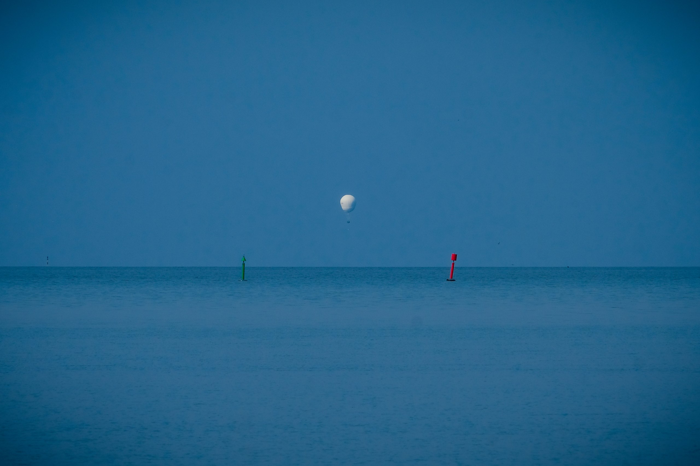

Vollfassung + Anhang
Clip · Platzhalter F062
1
Tuileries 1906
2
Helvetia 1908

1906 · Der Stifter
Bild folgt
Porträt James Gordon Bennett Jr.
(gemeinfrei, Recherche)
30. September 1906
Bild folgt
Start im Tuileries-Garten 1906
(Library of Congress / Wikimedia)
Die Regeln
3000 m · Wind aus Südwest
1000 m · Wind aus Nordwest
200 m · Wind aus West
1906 – 2026
Die Grossen
Porträt folgt
Demuyter
Porträt folgt
Starkbaum
Porträt folgt
Eimers
Seit 1898
Bild folgt
Spelterini über den Alpen
(ETH-Bildarchiv) oder Start Schlieren 1909
1908 – 2026
Berlin, 11. Oktober 1908
Bild folgt
Start «Helvetia», Berlin 1908
Frieden / Witprächtiger
Bild folgt
Frieden / Witprächtiger
(Rechte klären)
2021 – 2025
28. August 2026
Uni Bern · ETH Zürich · NETBAT
Grafik folgt
Trajektorienfächer ECMWF-Ensemble
(Command Center oder Nachbau aus ERA5)
Clip Start · Platzhalter F050
–
–
–
–
Samstag, 29. August
Die Zahlen
Sonntag, 30. August
Misinmäki · Loviisa
Rangliste · 69. Coupe Aéronautique Gordon Bennett
1
2
3
Medienecho
Das Team
Bild folgt
Command Center · Retrieve-Crew
Siegerehrung · Platzhalter F074
15. Oktober 2026 · Aeronautica Militare Balloon Cup
–
–
–
–
Zwei Fahrten, zwei Strategien
Platzhalter S019
Rangliste · Gasballone
1
2
3
Anhang